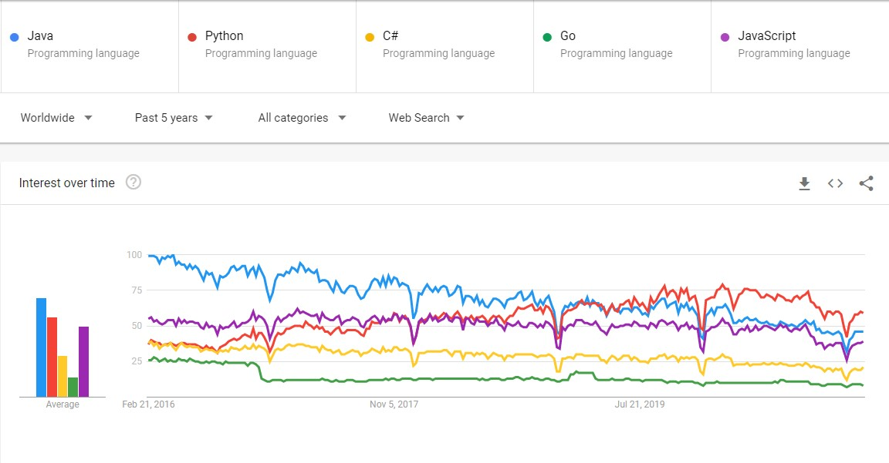

Python is a very nice language to learn. Python was not my first language but I know it the best. It is considered a high-level language with an interpreter, not a compiler. This can make Python a relatively slower programming language in terms of execution however, due to the nature of the syntax very powerful code is able to be written in short amounts of time. Python is often a good first language since the syntax is similar to English, it is very human readable which makes it beginner friendly and since it can accomplish lots in smaller amounts of code, it makes it perfect for beginners. Python is also one of the top trending languages researched according to Google Trends.
C++ is quite difficult to learn in comparison to Python. I learnt C++ on my own during the summertime whereas I learnt Python at Marianopolis in the Computer Programming course. C++ syntax is much different from Python and it is a lower-level langauge, meaning it runs much closer to the hardware of the computer and as a result, executes faster. Hopefully I can expand my knowledge soon as its something I am interested in for university.
Here is an image about the trendline comparing various coding languages. Pressing on it will bring you to the webpage.
